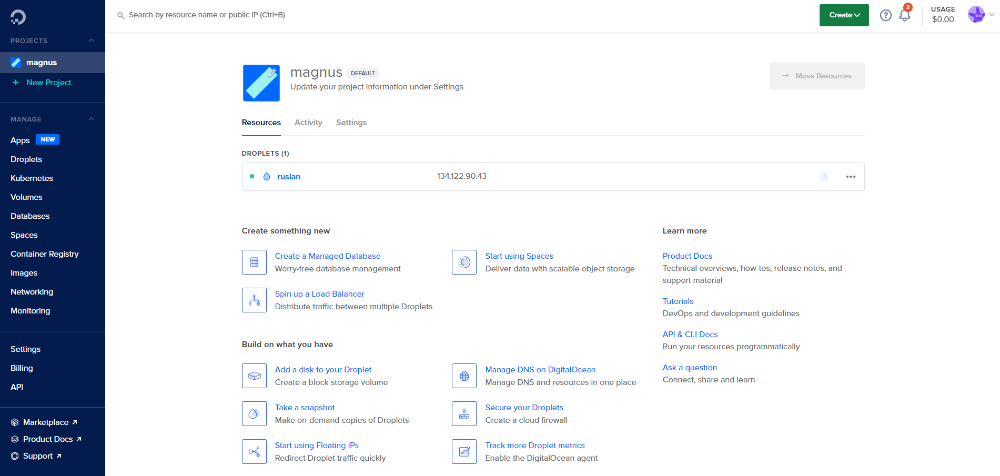
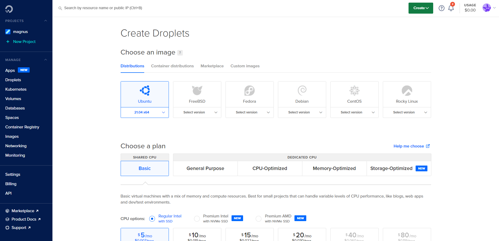
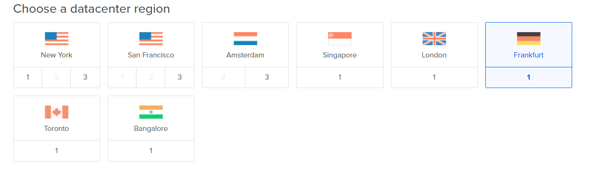
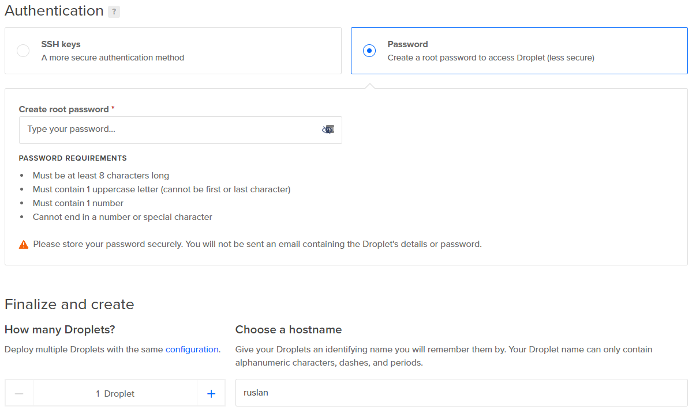
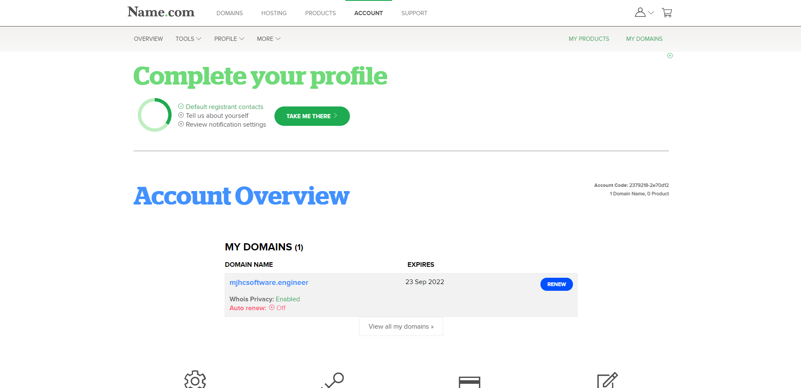
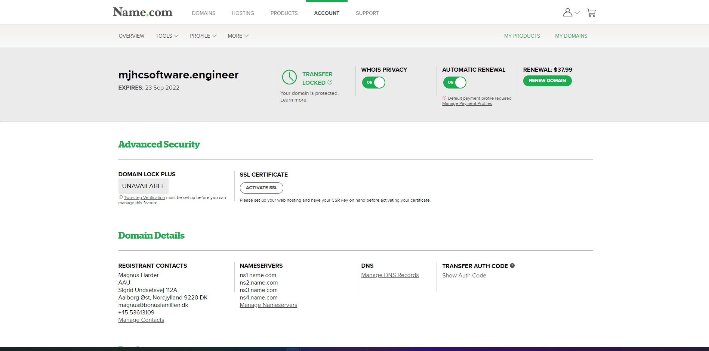
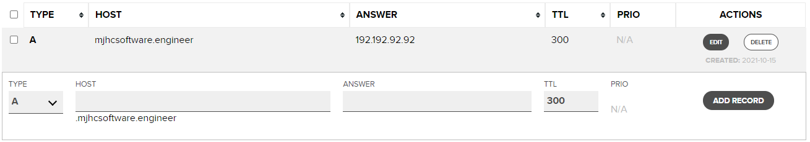
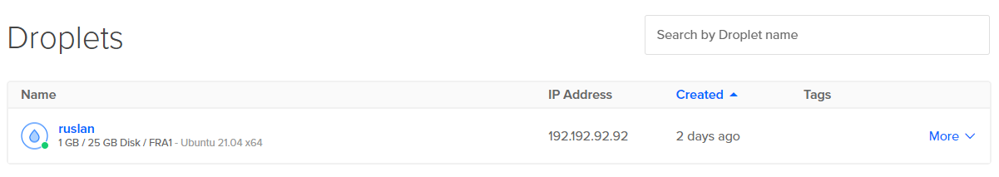

Når man er studerende så tilbyder GitHub GitHub PRO gratis, samt nogle forskellige produkter gratis. herunder domæner og 100$ til DigitalOcean.
For at få GitHub PRO, skal du gå ind på det her link og trykke på "Sign up for Student Developer Pack".
DigitalOcean er en hjemmeside som tilbyder virtuelle maskiner hvor man kan køre hjemmeside serverer på og meget andet.
Når du har fået GitHub PRO kan du gå ind på DigitalOcean og følge deres vejledning til opretning af bruger.
Hvis du har fulgt instruktionerne rigtigt burde din projects side se sådan her ud:
Klik nu på den grønne create knap, og klik derefter på droplets, så burde du komme ind på denne side:
Vælg ubuntu, og en basic plan. Derefter rul ned til "Choose a datacenter region", her vælger du Frankfurt:
Herefter skal du vælge et password og et navn til din server:
Når du har fulgt punkterne her, kan du nederst på siden trykke "Create droplet". Nu har du din egen server!
Name.com tilbyder 1 års gratis domæne til studerende med en GitHub Student Developer Pack.
Opret en konto med din GitHub på Name.com og følg instuktionerne på hjemmesiden.
Hvis du har gjort alting rigtigt burde din account side gerne se sådan her ud:
Klik på dit domæne navn, så får du nogle flere informationer og indstillinger:
Når du er inde på details siden, så skal du klikke på "Manage DNS Records" under Domain Details
Her fortæller du hvilken ip dit domæne skal peje hen på når at folk skriver det ind i deres browser. I feltet ANSWER skal du skrive din DigitalOcean Servers IP adresse. Du kan finde IPen under Droplets på din DigitalOcean side:
Nu kan folk komme ind på din hjemmeside! Nu skal den bare skrives:)
Nu har du lavet en server, en NodeJS application og et domæne. Og nu skal du have koblet din NodeJS application til din server. Denne guide fortæller dig hvordan du opretter en SSH forbindelse til din server og sætter den op til at køre din NodeJS application.
Du kan oprette forbindelse til din server, ved at skrive ssh root@mydomain.com i en terminal. Hvis du bruger windows, kan du bruge PowerShell. Jeg kan anbefale at du installere WSL2 på din windows maskine:)
Du vil blive bedt om at skrive adgangskoden til serveren (adgangskoden er den som du lavede til din DigitalOcean Droplet).